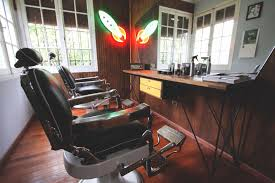
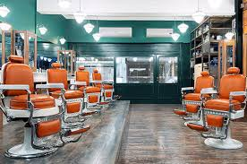

2010
El Garaje y la Primera Máquina.
Todo empezó en un pequeño local de 3x3. No teníamos sillones de cuero, solo una silla de madera y muchas ganas de revolucionar el corte masculino. Fue el año en que decidimos que cada cliente debía salir como una versión mejorada de sí mismo.

2018
Cultura Barber Shop
Nos mudamos al local actual. Incorporamos la barra de tragos, el pool y nos especializamos en el afeitado tradicional con toallas calientes. Poulain dejó de ser solo una barbería para convertirse en el punto de encuentro antes de cada salida.

HOY
Más que un Corte
Con un equipo de 5 barberos de élite, seguimos innovando con técnicas de Fade, Hair Tattoo y tratamientos capilares de última generación. La historia la seguimos escribiendo con vos.
